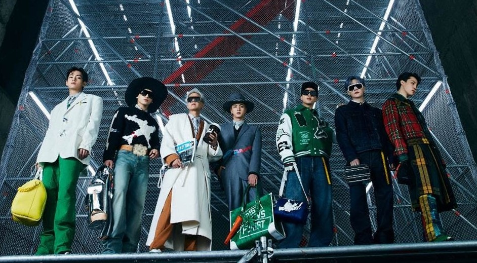
Since its founding in Paris in 1854, Louis Vuitton has catered to—among the
general throng of well-heeled everywomen—empresses, explorers, and magazine editors. What was once a tony little Parisian luggage shop is now the multifaceted jewel in the crown that sits atop the head of Bernard Arnault, CEO of the fashion conglomerate LVMH, who, in 2003, likened the revenue-generating house to a “luxury Microsoft.”
The new alliance was formidable. Ghesquière’s retro-futuristic manifesto at Balenciaga had earned him a reputation as not just a highly original thinker but one of his generation’s brightest lights. “Louis Vuitton has always incarnated for me the symbol of ultimate luxury, innovation, and exploration,” he said upon his appointment. “We share common values and a vision.”
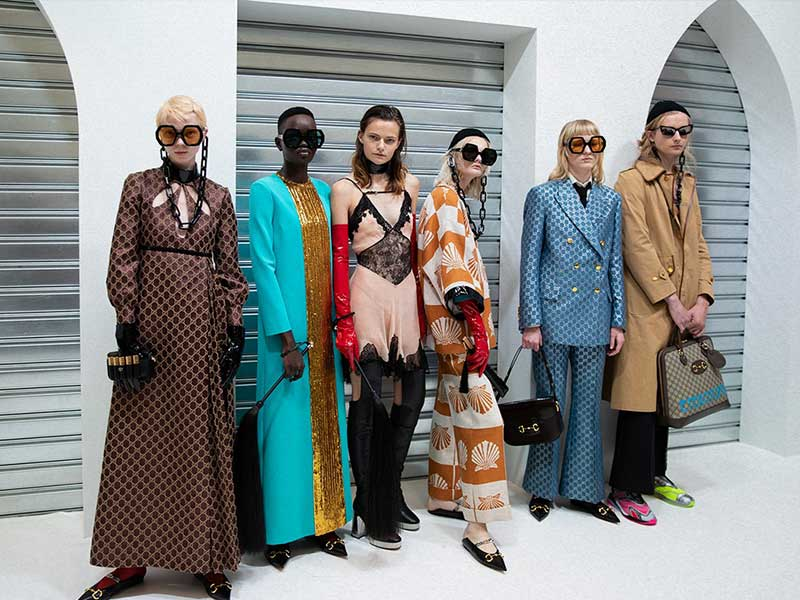
It’s quite certain that when Guccio Gucci started out, he never dreamed that his small luggage company would grow to one carrying such cultural significance. But since Gucci was founded in Florence in 1921, the company has built a catalog of genuinely
iconic trademarks. The interlocking GG logo; the bar-and-bit belt buckle; the bamboo-handle handbag; the omnipresent loafer—all of them have helped the brand penetrate mainstream culture like no other Italian label in history.
The French holding company now called Kering, which had owned a portion of the label since 1999, took managerial control in 2004, to Ford’s extreme chagrin—and he departed, leaving the brand with a very big pair of alligator loafers to fill. Ford had taken the company from virtual bankruptcy to a value of $4.3 billion. Enter the relatively unassuming Frida Giannini, an accessories designer: She had been part of the Gucci design stable for nearly five years when she was awarded the top spot, overseeing menswear, womenswear, and accessories in 2006. Her roughly 10-year reign was marked by diminishing returns, and her onetime underling Alessandro Michele in turn replaced her in 2015. The reversal of Gucci’s fortunes has been nothing short of staggering.
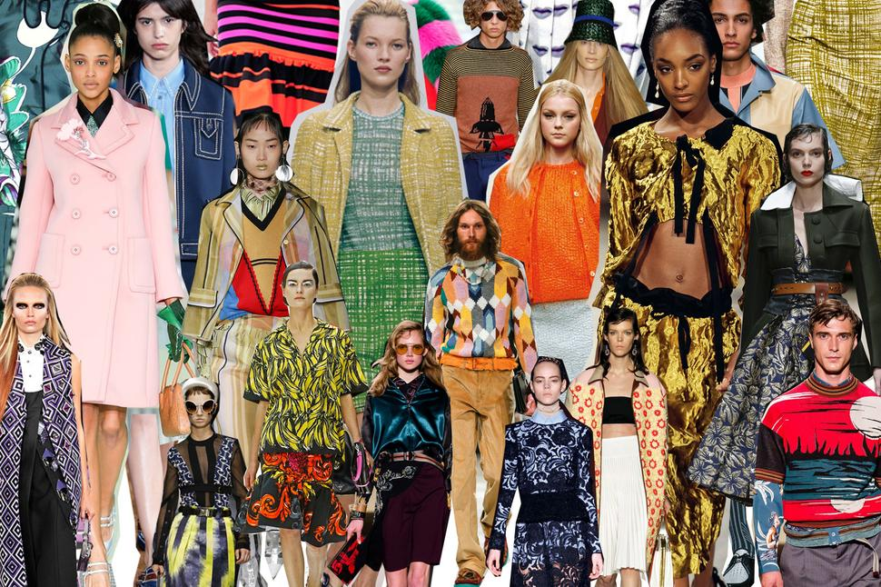
Fans of the Milanese label Prada tend to have two things in common: an appreciation for intellectualism in design and a desire to wear it in an artful but still pretty way. The brand’s creative head, Miuccia Prada, is known for her ability to divine the future of fashion
and launching seismic-force trends that ripple through the industry with impressive—and lasting—effects.
Thrust into her new role as a businesswoman, the introspective Prada found her match when she met Patrizio Bertelli, a headstrong Tuscan leather-goods manufacturer who had his own factory. He eventually became her husband. With Bertelli’s business-shark brain and Prada’s prescience for what the public didn’t yet know it craved, the brand’s revival wasn’t long in coming. The surprise product that set everything in motion was an innocuous black backpack, made from the same fine nylon fabric that Prada’s grandfather had used as a protective cover on his steamer trunks (and the Italian army had used for parachutes). Ready-to-wear had been launched in 1988, and as the company’s fortunes rose, Prada began to establish herself as a talented clothing designer—in fact, the one to watch.
Prada has a deep interest in contemporary art; it steadily informs her work. The Fondazione Prada opened its permanent space in 2015; it’s as essential a destination during Milan Fashion Week as the label’s show.
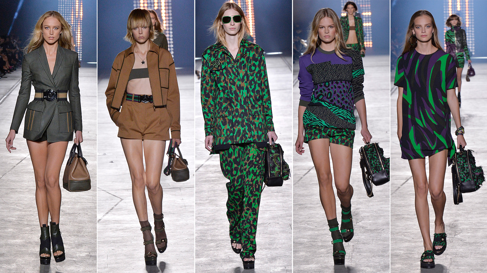
You can count on one hand the number of fashion houses that enjoy the name recognition that Versace does. Today, under the leadership of Donatella Versace—just as in the ’80s and ’90s when the brand was run by her brother Gianni—it is a universal symbol of all that is glamorous and decadent.
Versace doesn’t make clothes that are avant-garde, arty, or untouchably elegant; it makes clothes for red carpet photo calls in Cannes and parties aboard a rap mogul’s mega-yacht in Monaco.
Since Gianni’s sudden death in 1997 at the hands of a spree killer, all of the attention—and responsibility for design—has fallen on Donatella. Her front rows are even more glittering than they were in her brother’s day, and Hollywood is just as enamored. Antonio Banderas has reportedly signed on to star as Gianni in a Bille August–directed movie about the Italian fashion dynasty.
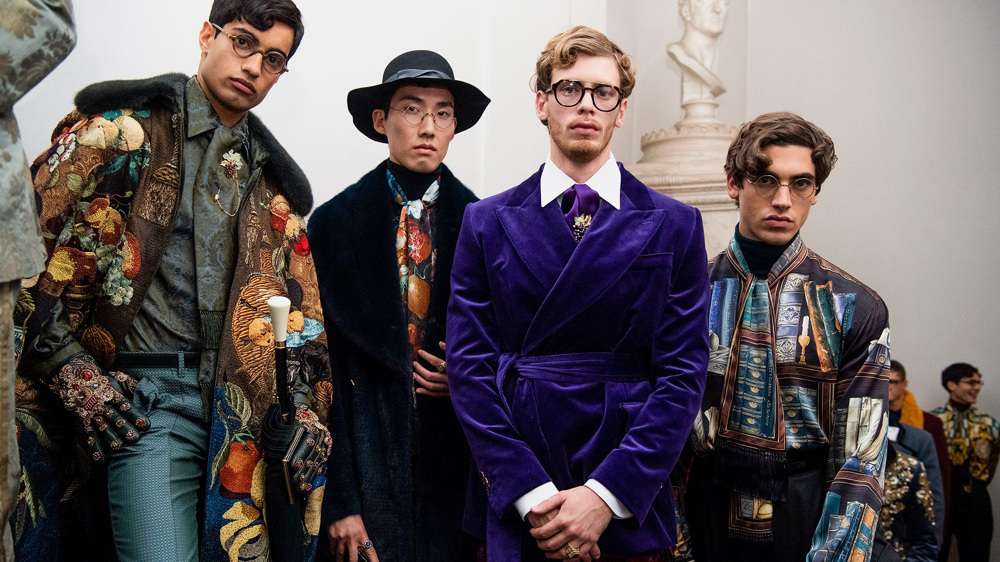
Dolce and Gabbana are considered the inventors of a Mediterranean style that draws its inspiration from the Sicily of Luchino Visconti's 1963 film The Leopard and the women of Italian realism, sensual and austere like Anna Magnani, to whom they dedicated a collection whose key element was the 1940s slip.
Designers Domenico Dolce and Stefano Gabbana have developed Dolce & Gabbana into one of the fashion industry's most prominent labels. Their unique design aesthetic of feminine sensuality and exotic Mediterranean characteristics provide a contemporary take on fashion that has attracted an elite celebrity following.
What is the difference between D&G and Dolce & Gabbana?
D&G and Dolce and Gabbana are the same elementary school. However, the only difference is that D&G is a cheaper version of Dolce and Gabbana. Don't confuse it with scams, it's just cheaper. The same is true of Armani and Armani exchanges.
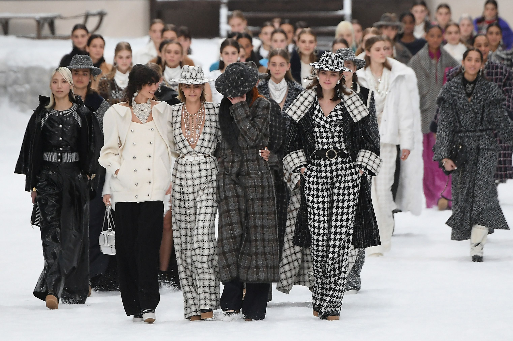
With a snip of her ribbon-looped scissors, Gabrielle “Coco” Chanel released women from their corsets and put them in fluid jersey suits and loose chemise dresses. “Nothing is more beautiful than freedom of the body,” she said. Chanel opened up a new world for her customers, in which they could dress and play as she did—like the boys.
Cecil Beaton observed the key to Chanel’s success in his 1954 book The Glass of Fashion: “It is the genius who creates the need, though that need must reflect the unconscious wishes of the moment if that genius is to be accepted.” To the liberated legions shedding their mantles of feminine festoonery, Chanel offered wide-leg trousers, cardigan jackets, striped Breton tops, turbans, turtlenecks, peacoats, and, of course, the LBD.
The house of Chanel has had two masters, but as it sails into its second century, its signature has remained the same—bold, understated elegance. To borrow another Coco-ism: “Fashion passes; style remains.”
Lagerfeld worked at Chanel up until his death on February 19, 2019. The same day, the house name his longtime right-hand, Virginie Viard, as its new artistic director.
LOUIS VUITTON
general throng of well-heeled everywomen—empresses, explorers, and magazine editors. What was once a tony little Parisian luggage shop is now the multifaceted jewel in the crown that sits atop the head of Bernard Arnault, CEO of the fashion conglomerate LVMH, who, in 2003, likened the revenue-generating house to a “luxury Microsoft.”
The new alliance was formidable. Ghesquière’s retro-futuristic manifesto at Balenciaga had earned him a reputation as not just a highly original thinker but one of his generation’s brightest lights. “Louis Vuitton has always incarnated for me the symbol of ultimate luxury, innovation, and exploration,” he said upon his appointment. “We share common values and a vision.”
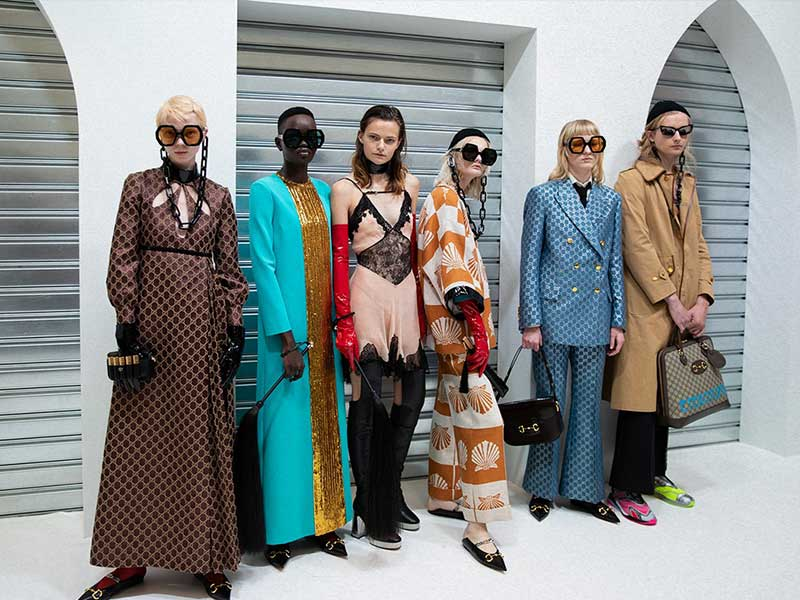
GUCCI
The French holding company now called Kering, which had owned a portion of the label since 1999, took managerial control in 2004, to Ford’s extreme chagrin—and he departed, leaving the brand with a very big pair of alligator loafers to fill. Ford had taken the company from virtual bankruptcy to a value of $4.3 billion. Enter the relatively unassuming Frida Giannini, an accessories designer: She had been part of the Gucci design stable for nearly five years when she was awarded the top spot, overseeing menswear, womenswear, and accessories in 2006. Her roughly 10-year reign was marked by diminishing returns, and her onetime underling Alessandro Michele in turn replaced her in 2015. The reversal of Gucci’s fortunes has been nothing short of staggering.
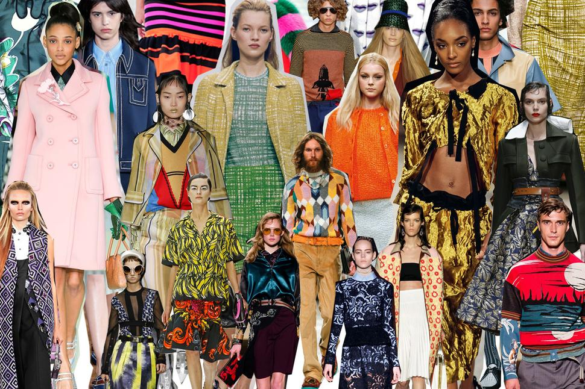
PRADA
Thrust into her new role as a businesswoman, the introspective Prada found her match when she met Patrizio Bertelli, a headstrong Tuscan leather-goods manufacturer who had his own factory. He eventually became her husband. With Bertelli’s business-shark brain and Prada’s prescience for what the public didn’t yet know it craved, the brand’s revival wasn’t long in coming. The surprise product that set everything in motion was an innocuous black backpack, made from the same fine nylon fabric that Prada’s grandfather had used as a protective cover on his steamer trunks (and the Italian army had used for parachutes). Ready-to-wear had been launched in 1988, and as the company’s fortunes rose, Prada began to establish herself as a talented clothing designer—in fact, the one to watch.
Prada has a deep interest in contemporary art; it steadily informs her work. The Fondazione Prada opened its permanent space in 2015; it’s as essential a destination during Milan Fashion Week as the label’s show.
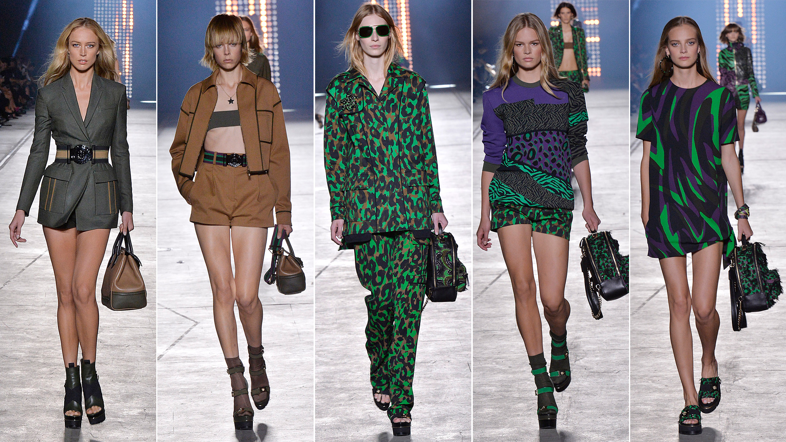
VERSACE
Since Gianni’s sudden death in 1997 at the hands of a spree killer, all of the attention—and responsibility for design—has fallen on Donatella. Her front rows are even more glittering than they were in her brother’s day, and Hollywood is just as enamored. Antonio Banderas has reportedly signed on to star as Gianni in a Bille August–directed movie about the Italian fashion dynasty.
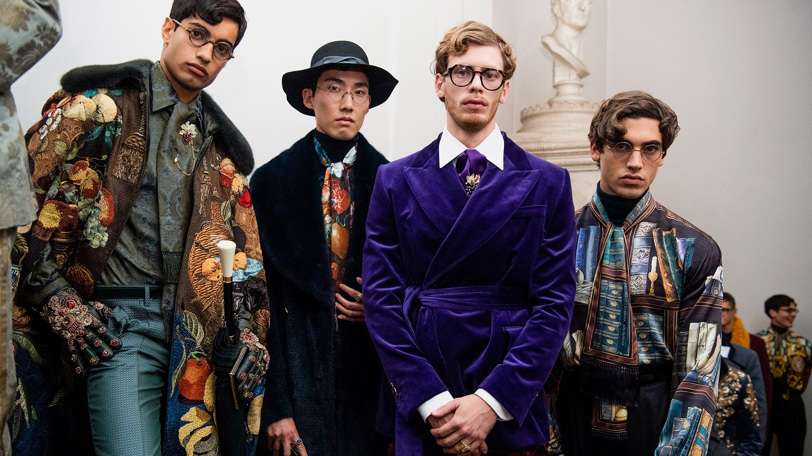
DOLCE GABBANA
Designers Domenico Dolce and Stefano Gabbana have developed Dolce & Gabbana into one of the fashion industry's most prominent labels. Their unique design aesthetic of feminine sensuality and exotic Mediterranean characteristics provide a contemporary take on fashion that has attracted an elite celebrity following.
What is the difference between D&G and Dolce & Gabbana?
D&G and Dolce and Gabbana are the same elementary school. However, the only difference is that D&G is a cheaper version of Dolce and Gabbana. Don't confuse it with scams, it's just cheaper. The same is true of Armani and Armani exchanges.
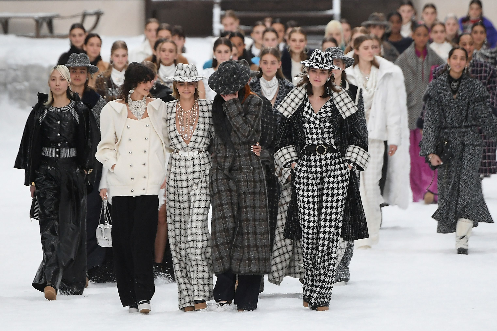
CHANEL
Cecil Beaton observed the key to Chanel’s success in his 1954 book The Glass of Fashion: “It is the genius who creates the need, though that need must reflect the unconscious wishes of the moment if that genius is to be accepted.” To the liberated legions shedding their mantles of feminine festoonery, Chanel offered wide-leg trousers, cardigan jackets, striped Breton tops, turbans, turtlenecks, peacoats, and, of course, the LBD.
The house of Chanel has had two masters, but as it sails into its second century, its signature has remained the same—bold, understated elegance. To borrow another Coco-ism: “Fashion passes; style remains.”
Lagerfeld worked at Chanel up until his death on February 19, 2019. The same day, the house name his longtime right-hand, Virginie Viard, as its new artistic director.